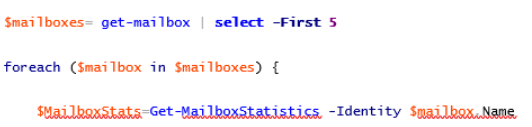

Summary: Some PowerShell validations can result in long retrieval time, making even small changes take hours to effect. This method allows for quicker validation for job change purposes and then a full query upon job execution.
Issue: Customer had designed a custom PowerShell query to their Exchange server where only the production server was available to validate against. Given the large number of mailboxes, each validation ran an hour, which was very inefficient when testing and building reports. The customer inquired if there was a way to limit the validation but still get the full results during a scheduled run.
Instructions: The PowerShell Collector needs to validate the PS code in order to know what the return objects are. (This is also why the results/column selection comes after validation-it doesn't know what columns to offer you without seeing the return itself first.)
Adding "Get-Content -TotalCount 5" or "| select -First 5" to their query allows for a quick validation return. Depending on the script, "Get-Content -TotalCount" should be faster, but in our customer's example they used the "| select" method which works similarly:

This allows for quick validation while still providing the proper column selection. However it must be changed back once finalized, and doing so requires re-validation. This can be circumvented by altering the job's XML file.
- At the query properties screen, click the view XML button: